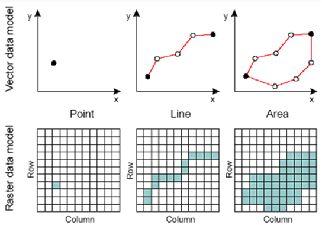

4 Mapping Raster Data
This section is all about Raster data, it’s different types and some uses for social science.
Slides can be downloaded “here”
Raster Data
Raster data is a digital image format that represents data as a grid of individual pixels, with each pixel containing a specific value or color information.
- Square grid of pixels.
- Pixel values can represent continuous or categorical variables:
- Divides 2-D space into regular cells - pixels
- Each cell has a single value
- Values assigned according to value at mean, centre point, or some other rule

Data Types
Grayscale Rasters
Grayscale raster data is a type of digital image representation that uses varying shades of gray to depict the intensity or brightness of a particular phenomenon at different locations. In grayscale images, pixel values typically range from 0 (black) to 255 (white), with intermediate values representing different levels of gray. These pixel values can represent continuous data, making grayscale rasters suitable for visualizing and analyzing phenomena where intensity or variation needs to be conveyed, such as medical X-rays, satellite nightlights data, or other scenarios where the focus is on quantifying the degree of a single attribute without using color.
Example: Nightlights Data
Nightlights data can be represented as a grayscale raster, where darker areas indicate lower levels of artificial light, and lighter areas represent higher levels of artificial light. The pixel values may represent the radiance or luminance values of nighttime lights. Satellite-based nightlights data is used for various applications, such as monitoring urban development, assessing light pollution, and understanding human activity patterns at night.
Multispectral Rasters
Multispectral rasters are a type of digital image representation that incorporates multiple spectral bands or channels to capture a diverse range of information about a scene or phenomenon. In multispectral rasters, each channel represents a specific part of the electromagnetic spectrum, such as visible light, near-infrared, or thermal infrared. By combining these spectral bands, multispectral data provides a comprehensive view of the landscape, enabling analysis of various aspects like vegetation health, land use, or changes in urban and rural conditions. This type of raster data is commonly used in applications such as remote sensing, agriculture, and natural resource management, where a nuanced understanding of different attributes of the environment is essential.
Example: Landsat Satellite Imagery
Landsat satellite imagery, with its multispectral bands, is extensively used for environmental monitoring. It allows for tracking changes in land cover, assessing vegetation health, monitoring water quality, and detecting forest fires. Researchers and environmental agencies use multispectral data to make informed decisions regarding conservation and resource management.
Color Rasters
Colour rasters are a digital image representation that utilizes the combination of three primary colour channels: red, green, and blue (RGB) to create a full range of colors. Each pixel in a colour raster is assigned values for these three color channels, which determine the pixel’s color.
Example: Digital Photographs
Coluor rasters, as seen in digital photographs can be used for social sciences by analysing pixel differences.
Elevation Rasters
Elevation rasters are a type of digital representation that use a grid of values to depict the varying heights or elevations of the Earth’s surface across different locations. Each pixel in an elevation raster contains a numerical value representing the height or elevation above a reference point, such as sea level. Elevation rasters are commonly used in geospatial applications, cartography, and terrain modeling. They enable precise visualization and analysis of topographic features, such as mountains, valleys, and slopes, making them essential for tasks like mapmaking, land-use planning, flood risk assessment, and 3D visualization of landscapes.
Example: Digital Elevation Models (DEMs)
DEMs are vital for creating topographic maps, analyzing terrain, and conducting spatial modeling. They find applications in urban planning, flood risk assessment, route planning, and 3D visualization. DEMs enable precise representation of Earth’s surface elevation, supporting a wide range of geospatial applications.